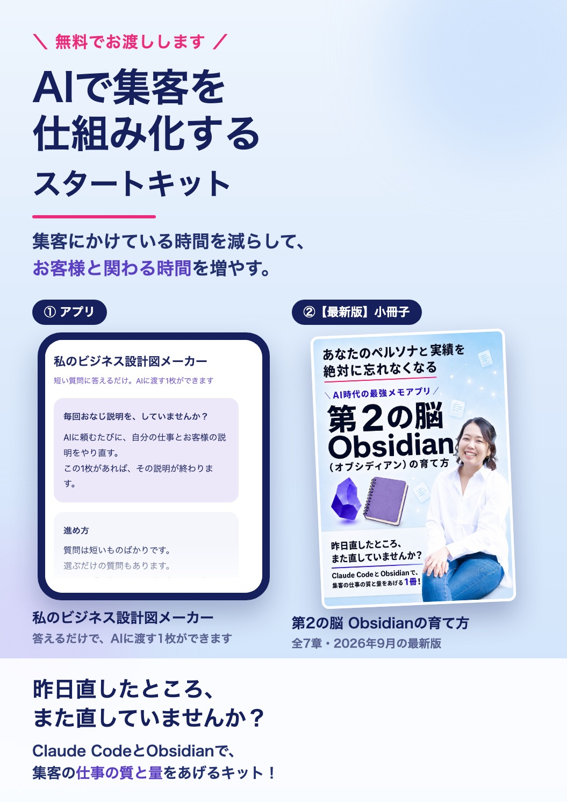
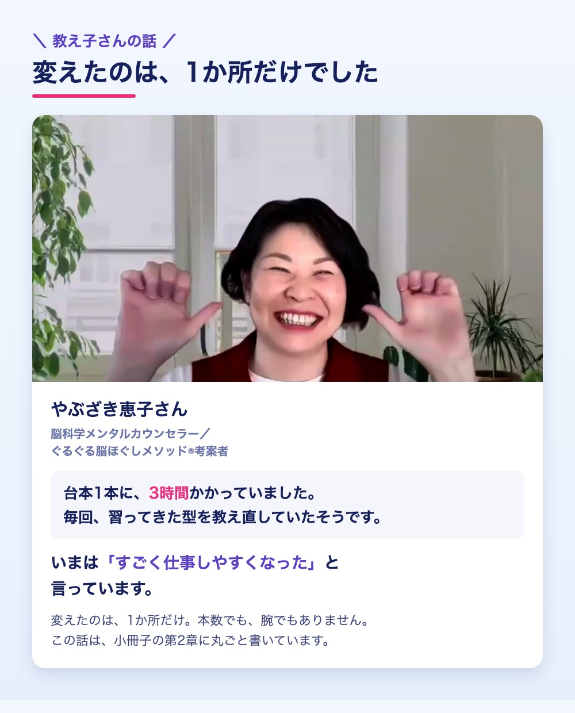
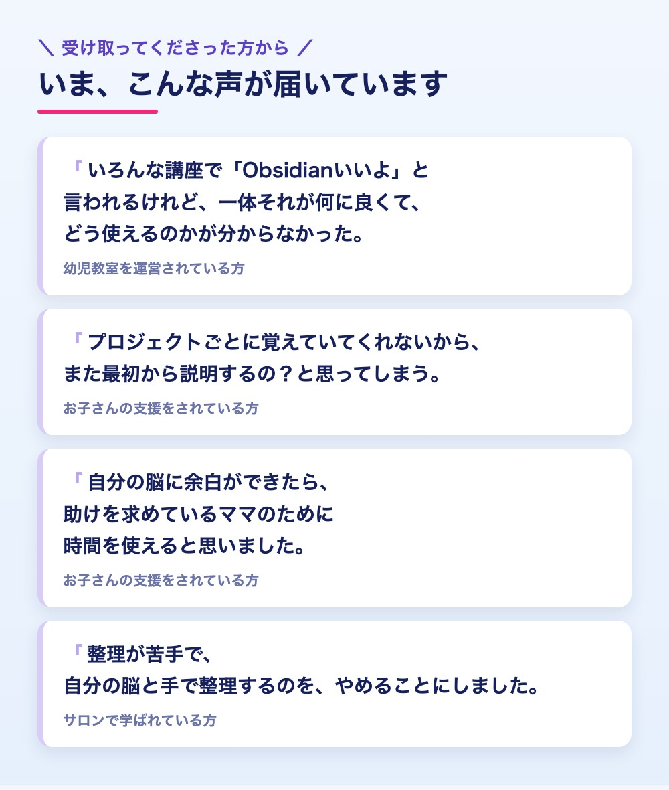

メールアドレスを入れるだけで、 すぐにお届けします＾＾
スタートキットを受け取る（無料）こんなこと、ありませんか？
AIに頼むたびに、 自分の仕事のこと、お客様のことを また打ち込んでいる。
AIが書いた文章を、 結局、最後は自分で書き直している。
新しいAIが出るたびに、 乗り換えたほうがいいのか迷ってしまう。
学んできたことが増えすぎて、 AIにどう渡せばいいのか分からない。
差は「AIに渡している記憶」
使いこなしている人との差は、 使っているAIの新しさでは ありませんでした。
AIに渡している、 あなたの「記憶」の量でした。
記憶を、AIの中に置いていると 会話が変わるたびに抜けてしまう。
だから、 自分のパソコンの中に置くんです。
AIが変わっても、 あなたの経験は、手元に残ります＾＾
スタートキットの中身は2つ
1 第2の脳 Obsidianの育て方（小冊子）
あなたの仕事のこと。 お客様と向き合って気づいたこと。
そんな記録を、 AIを乗り換えても残る場所に ためていく方法です。
2 私のビジネス設計図メーカー
質問に答えながら、 Obsidianに入れる最初の１枚を作れます。


受け取りフォーム
＼ メールアドレスを入れるだけ ／
送ると、info@belle-coach.com から スタートキットがすぐに届きます＾＾
※届いていなければ、迷惑メールフォルダや 「プロモーション」タブも見てみてくださいね。
新しいAIを追いかけ続ける半年と、 あなたの記憶が積み上がる半年。
あなたは、どちらを選びますか？
雪野由香 AI推薦設計コンサルタント／集まる集客カレッジ講師